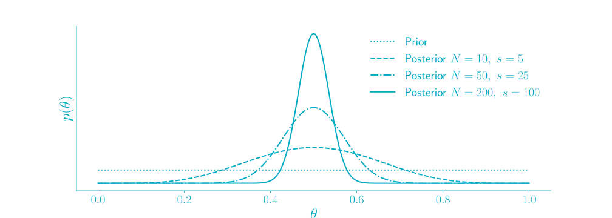

<!doctype html>
<html xmlns="http://www.w3.org/1999/html">
<head>
    <meta charset="utf-8">
    <meta name="viewport" content="width=device-width, initial-scale=1.0, maximum-scale=1.0, user-scalable=no">

    <title>hbar</title>

    <link rel="stylesheet" href="../reveal/css/reveal.css">
    <link rel="stylesheet" href="../reveal/css/theme/blood.css">

    <!-- Theme used for syntax highlighting of code -->
    <link rel="stylesheet" href="../reveal/lib/css/zenburn.css">

    <!-- Printing and PDF exports -->
    <script>
			var link = document.createElement( 'link' );
			link.rel = 'stylesheet';
			link.type = 'text/css';
			link.href = window.location.search.match( /print-pdf/gi ) ? '../reveal/css/print/pdf.css' : '../reveal/css/print/paper.css';
			document.getElementsByTagName( 'head' )[0].appendChild( link );

    </script>
</head>
<body>
<div class="reveal">
    <div class="slides">

        <section data-markdown data-separator="^\n---\n$" data-separator-vertical="^\n--\n$">
            <script type="text/template">
                ### Embrace Uncertainty

                <font color="yellow">**with Baysian Methods**</font>

                ---

                ##### Agenda
                * Beta-Binomial Model
                * Application: Return rates for fashion retailer

                ---

                #### Binomial Model

                ---

                ##### Example: coin toss
                * $N$: Number of times you flip
                * $\theta$: Heads probability
                * $s$: Number of times you flip "heads"

                --

                ##### Binomial distribution
                "Probability of $s$ successes, given $\theta$ and $N$ trials"
                \begin{align} p(s\, | \, N, \theta) = \binom{N}{s} \theta ^ s (1-\theta) ^ {N-s}\end{align}
                

                --

                #### Learning $\theta$
                * Often we want to learn about $\theta$
                * Assume that we made a coin toss with $N=100, s=50$
                * What is the success probability $\theta$?

                --

                ##### Maximum likelihood estimate (MLE)
                * For fixed $N$ and $s$ the MLE is defined by
                \begin{align}  \theta ^* = \underset{\theta}{\operatorname{argmax}}  p(s\, | \, N, \theta)\end{align}
                * For the Binomial distribution,
                \begin{align} p(s\, | \, N, \theta) = \binom{N}{s} \theta ^ s (1-\theta) ^ {N-s}\end{align}
                * The MLE is given by the success ratio
                \begin{align}  \theta ^* =  \frac{s}{N} \end{align}

                --

                ##### Maximum likelihood estimate
                

                --

                ##### Limits of MLE
                | $N$    | $s$ | $\theta^*$ |
                | ---    |:---:|:---------:|
                | 10     | 5   | 0.5       |
                | 100    | 50  | 0.5       |
                | 1000   | 500 | 0.5       |

                * Ignorant with respect to number of trials
                * Contains information about (un) certainty


                --

                ##### Limits of MLE
                * <font color="yellow"> But </font> the likelihood function is <font color="yellow">not</font> a probability distribution.
                * We cannot say "with 90 % probability the value of $\theta$ is in the interval $[a, b]$"
                * <font color="yellow">$\rightarrow$ need a probabilistic description.</font>

                ---


                #### Bayes

                ---

                ##### Recap
                * For joint probability distribution $p(x,y)$
                * Marginal \begin{align}p(x) = \int p(x,y)\, \text{d}y\end{align}
                * Conditional \begin{align}p(y \, | \, x) = \frac{p(x,y)}{p(x)}\end{align}

                --

                ##### Bayes Theorem
                \begin{align}p(x \, | \, y) = \frac{p(y \, | \, x) p(x)}{p(y)}\end{align}

                --

                ##### Returning to the problem
                * We have: $p(s\, | \, N, \theta)$
                * We want: $p(\theta\, | \, N, s)$

                <p class="fragment" data-fragment-index="1">
                    <font color="yellow">With Bayes Theorem</font> and $p(N, \theta) = p(N) p( \theta)$
                 $$$$

                \begin{align} \Rightarrow p(\theta\, | \, N, s) = \frac{ p(s\, | \, N, \theta) p(\theta) }{\int p(s\, | \, N, \theta') p(\theta') \, \text{d}\theta'} \end{align}

                </p>

                <p class="fragment" data-fragment-index="2">
                <font color="yellow">$\rightarrow$ need a distribution for $p(\theta)$ "prior"</font>
                </p>

                --

                #### Beta distribution
                \begin{align} p(\theta\, | \, a,b) = \frac{1}{B(a,b)} \theta^{a-1} (1-\theta)^{b-1}\end{align}
                

                --

                #### Putting things together
                * Need to compute
                \begin{align} p(\theta\, | \, N, s)
                = \frac{ p(s\, | \, N, \theta) p(\theta) }{\int p(s\, | \, N, \theta') p(\theta') \, \text{d}\theta'} \end{align}
                * with
                \begin{align} p(s\, | \, N, \theta) = \operatorname{Binom}(s\, | \, N, \theta) \end{align}
                \begin{align} p(\theta) = \operatorname{Beta}(\theta\, | \, a, b) \end{align}
                <font color="yellow">
                * Result
                \begin{align} \Rightarrow p(\theta\, | \, N, s) = \operatorname{Beta}(\theta\, | \, a + s , b + N -s)  \end{align}
                </font>


                --

                #### Posterior Distribution
                

                --

                #### Next step
                * Learn predictive prior "from data"
                * <font color="yellow">$\rightarrow$ Hierarchical Beta Binomial Model</font>
                * Gelman et. al., Baysian Data Analysis, 2014
                

                ---

                #### Application
                #### Returns of a Fashion Retailer

                ---

                #### Motivation
                
                * Suspicious "camel peaks"
                * Indicator for low frequency errors!


                --

                #### Let's do Bayes
                * $N$: number of product orders
                * $s$: number of returns
                * What is the return probability $\theta$?
                * <font color="yellow"> $\rightarrow$ use hierarchical beta-binomial machinery! </font>

                --

                #### Prior
                * Predictive Prior learned from data (hierarchical model)
                

                --

                #### Posterior (gedanken experiment)
                

                --

                #### Results
                


                ---

                #### Summary
                * Bayesian methods allow to deal with uncertainty in a systematic way
                * The more data you have the more certain you are
                * ... and the way round

                <font color="yellow">
                Outlook: Decision theory </font>


            </script>
        </section>


    </div>
</div>

<script src="../reveal/lib/js/head.min.js"></script>
<script src="../reveal/js/reveal.js"></script>

<script>
			// More info https://github.com/hakimel/reveal.js#configuration
			Reveal.initialize({
				history: true,

				math: {
		            mathjax: 'https://cdn.mathjax.org/mathjax/latest/MathJax.js',
		            config: 'TeX-AMS_HTML-full'  // See http://docs.mathjax.org/en/latest/config-files.html
	            },

				// More info https://github.com/hakimel/reveal.js#dependencies
				dependencies: [
					{ src: '../reveal/plugin/markdown/marked.js' },
					{ src: '../reveal/plugin/markdown/markdown.js' },
					{ src: '../reveal/plugin/notes/notes.js', async: true },
					{ src: '../reveal/plugin/highlight/highlight.js', async: true, callback: function() { hljs.initHighlightingOnLoad(); } },
					{ src: '../reveal/plugin/math/math.js', async: true }
				]
			});

</script>
</body>
</html>
